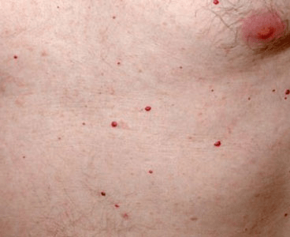
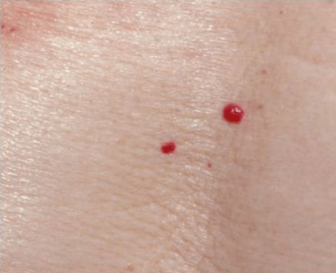

This surgical method of treatment involves burning the angioma by using an electric current delivered by a tiny probe. For this procedure, you’ll also have a grounding pad placed somewhere on your body to ground the rest of your body from a surge of electricity.
Cryosurgery involves freezing the angioma with liquid nitrogen. The extreme cold will
destroy it. This method is known for being a quick and relatively easy procedure.
You often only need one treatment session for cryosurgery to work, and the liquid
nitrogen is usually sprayed for only about 10 seconds. The wound doesn’t require
much care afterward.
This type of surgery involves using a pulsed dye laser (PDL) to get rid of the cherry
angioma. The PDL is a concentrated yellow laser that gives off enough heat to destroy
the lesion. This method is quick and is done as an outpatient procedure, which means
you won’t have to stay in the hospital overnight.
Depending on how many angiomas you have, you may need between one and three treatment
sessions. This surgery can cause slight bruising, which can last up to 10 days.
This procedure involves removing the angioma from the top portion of skin.
Shave excision is an alternative to invasive surgery that would involve cutting
out the lesion or growth and using stitches, or sutures, to close the wound.
If you do have angiomas removed with any of these methods, scarring is uncommon but
always possible.